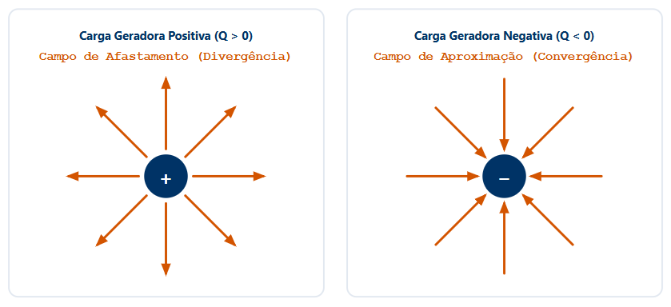

3º Ano | Aula 03: Campo Elétrico de Cargas Pontuais
📚 Resumo
O Campo Elétrico ($\vec{E}$) é uma propriedade do espaço modificada pela presença de uma carga geradora ($Q$). Qualquer carga de prova ($q$) colocada nessa região experimentará uma força elétrica ($\vec{F}$).
A intensidade do campo elétrico gerado por uma carga puntiforme no vácuo é dada por $E = k_0 \cdot \frac{\vert{}Q\vert{}}{d^2}$. Por convenção, as linhas de força de uma carga positiva são de afastamento (divergentes) e de uma carga negativa são de aproximação (convergentes).
📖 Campo Elétrico e Suas Propriedades
1. Vetor Campo Elétrico ($\vec{E}$) e Carga de Prova ($q$)
A força elétrica exercida sobre uma carga de prova $q$ situada em um ponto onde existe um campo elétrico $\vec{E}$ é calculada por:
$$\vec{F} = q \cdot \vec{E} \implies E = \frac{F}{\vert{}q\vert{}}$$
Unidade no SI: Newton por Coulomb ($\text{N/C}$) ou Volt por metro ($\text{V/m}$).
Se $q > 0$: $\vec{F}$ e $\vec{E}$ possuem a mesma direção e mesmo sentido.
Se $q < 0$: $\vec{F}$ e $\vec{E}$ possuem a mesma direção e sentidos opostos.
2. Campo Elétrico de uma Carga Puntiforme ($Q$)
O módulo do campo elétrico produzido por uma única carga geradora $Q$ a uma distância $d$ vale:
$$E = k_0 \cdot \frac{\vert{}Q\vert{}}{d^2}$$
Observação importante: O campo elétrico não depende da presença da carga de prova $q$, apenas da carga geradora $Q$, do meio ($k_0$) e da distância $d$.
3. Linhas de Força e Orientação Vetorial
Carga Geradora Positiva ($Q > 0$): O vetor campo elétrico é de divergência (afastamento).
Carga Geradora Negativa ($Q < 0$): O vetor campo elétrico é de convergência (aproximação).

Figura 1: Representação gráfica do campo elétrico de afastamento (carga positiva) e aproximação (carga negativa).
4. Princípio da Superposição para Campos Elétricos
Em um ponto $P$ sujeito ao campo de diversas cargas geradoras ($Q_1, Q_2, \dots$), o vetor campo elétrico resultante ($\vec{E}_R$) é a soma vetorial dos campos individuais produzidos por cada carga:
$$\vec{E}_R = \vec{E}_1 + \vec{E}_2 + \dots$$
💡 Física em Ação
🖥️ Monitores CRT e Aceleradores de Partículas
Campos elétricos são utilizados para acelerar e direcionar feixes de elétrons em aceleradores de partículas (como o LHC) e nas antigas telas de televisão de tubo.
🫀 Eletrocardiograma (ECG)
O coração gera um campo elétrico variável a cada batimento. Eletrodos colocados sobre a pele captam a diferença de potencial elétrico e mapeiam o funcionamento cardíaco.
✅ 5 Questões Resolvidas (R 1 a 5)
R 1: Campo Gerado por Carga Puntiforme
Enunciado: Calcule o módulo do campo elétrico gerado por uma carga $Q = 4,0\ \mu\text{C}$ no vácuo em um ponto situado a $2,0\text{ m}$ da carga. ($k_0 = 9 \times 10^9\text{ N}\cdot\text{m}^2/\text{C}^2$).
Enunciado: Uma carga de prova $q = -2,0\ \mu\text{C}$ é colocada em um ponto onde existe um campo elétrico de módulo $E = 5 \times 10^4\text{ N/C}$ voltado horizontalmente para a direita. Determine o módulo, a direção e o sentido da força elétrica exercida sobre $q$.
Resolução:
• Módulo: $F = \vert{}q\vert{} \cdot E = (2 \times 10^{-6}) \cdot (5 \times 10^4) = \mathbf{0,1\text{ N}}$.
• Direção: Horizontal.
• Sentido: Como a carga $q$ é negativa, a força tem sentido oposto ao campo, ou seja, voltada para a esquerda.
R 3: Campo Elétrico Nulo no Ponto Médio
Enunciado: Duas cargas pontuais iguais $Q_1 = Q_2 = +6\ \mu\text{C}$ estão fixas e separadas por uma distância de $1\text{ m}$. Qual é a intensidade do campo elétrico no ponto médio do segmento que une as duas cargas?
Resolução:
No ponto médio, $Q_1$ gera um campo de afastamento $\vec{E}_1$ (para a direita) e $Q_2$ gera um campo de afastamento $\vec{E}_2$ (para a esquerda).
Como os módulos das cargas e as distâncias ($0,5\text{ m}$) são iguais, $E_1 = E_2$.
Por possuírem a mesma intensidade e sentidos opostos, o campo resultante é zero ($\vec{E}_R = 0$).
R 4: Relação entre Campo e Distância
Enunciado: A uma distância $d$ de uma carga $Q$, o campo elétrico vale $E$. Se dobrarmos a distância em relação à carga ($2d$), qual será o novo valor do campo elétrico?
Resolução:
O campo varia inversamente com o quadrado da distância ($E \propto \frac{1}{d^2}$).
Ao duplicar a distância para $2d$, a intensidade do campo cai para um quarto do valor original ($\mathbf{\frac{E}{4}}$).
R 5: Determinação da Carga Geradora por Força e Distância
Enunciado: Uma carga de prova $q = +1\ \text{nC}$ sofre uma força de $3 \times 10^{-3}\text{ N}$ quando colocada a $0,3\text{ m}$ de uma carga $Q$. Qual o valor da carga $Q$? ($k_0 = 9 \times 10^9$).
Enunciado: Uma carga pontual $Q = -8\ \mu\text{C}$ está no vácuo. Determine a intensidade do vetor campo elétrico criado por essa carga a $0,5\text{ m}$ de distância. ($k_0 = 9 \times 10^9\text{ N}\cdot\text{m}^2/\text{C}^2$).
Enunciado: O vetor campo elétrico em um ponto $P$ gerado por uma carga isolada aponta no sentido de se aproximar da carga. Qual é o sinal da carga geradora?
Resolução: A carga geradora é negativa ($Q < 0$), pois campos elétricos convergentes (de aproximação) são característicos de cargas negativas.
P 8: Força sobre Carga Positiva
Enunciado: Uma carga positiva $q = +3\ \mu\text{C}$ é colocada em uma região onde o campo elétrico vale $E = 2 \times 10^3\text{ N/C}$ para o Norte. Qual o módulo e o sentido da força elétrica resultante?
Resolução: $F = q \cdot E = (3 \times 10^{-6}) \cdot (2 \times 10^3) = \mathbf{6 \times 10^{-3}\text{ N}}$.
Como $q > 0$, o sentido da força é igual ao do campo: para o Norte.
P 9: Redução do Campo por Triplicação da Distância
Enunciado: Se a distância de um ponto até a carga geradora for triplicada, por qual fator a intensidade do campo elétrico diminuirá?
Resolução: O campo diminuirá por um fator $3^2 = 9$. O novo campo será $\frac{1}{9}$ (um nono) do campo inicial.
P 10: Dependência da Carga de Prova
Enunciado: Se substituirmos a carga de prova $q$ por outra de valor $2q$ em um ponto fixo, o valor do campo elétrico $E$ nesse ponto muda? Justifique.
Resolução:Não muda. O campo elétrico $E$ depende apenas da carga geradora $Q$, da distância $d$ e do meio. O que dobrará de valor será a força elétrica ($\vec{F}$) atuante sobre a nova carga de prova.